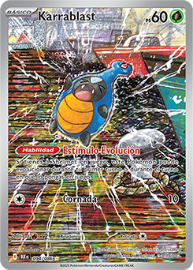
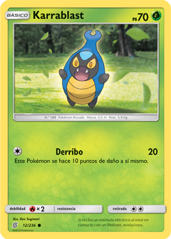

Número de Pokédex: #588


¡Bienvenido a tu pokedex de Kanto!
volver al inicio
Número de Pokédex: #588


TIPO: Bicho

Karrablast es un Pokémon de tipo Bicho introducido en la quinta generación, conocido como el "Pokémon Bocado" y reconocido por su exoesqueleto de color azul rey con un triángulo azur en la cabeza y un abdomen amarillo con tres rayas negras.